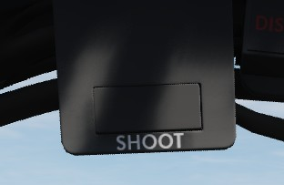

Upfront Indicators
Standby Magnetic Compass

A standard magnetic compass for backup navigation assistance should the primary flight director systems fail.
Command Ejection Select Handle

Used to select single or dual ejection as commanded by the WSO. In the vertical position (valve closed), initiation of ejection by the WSO ejects only the rear seat. With the valve handle in the horizontal (open) position, a WSO initiating ejection will extract both crew members.
Course Indicator

Used during an ILS approach, displays localizer and glide slope deviations represented dots—1 dot equals 1 1/4 degrees for course and 1/4 degree for glide slope. The heading pointer indicates the aircraft's heading relative to the selected course set by the knob. Does not function with TACAN or VOR. OFF flags display on signal loss.
KY-28 Mode Indicator

Two lamp indicator illustrating current KY-28 operating mode- P indicates plain (unencrypted) mode transmission, whereas C indicates cipher (encrypted) mode transmission.
Master Caution Light

A repeater of the front cockpit Master Caution light, provides warning to the WSO that a caution condition exists and the telelight panel needs to be checked for cause to rectify the situation.
Shoot Light

Illuminates when missile firing parameters are met. Do not illuminate when in VI or A-G modes.
AN/APR-36 Control Panel
Angle of Attack Indexer

Provides quick confirmation of current aircraft AoA state based on illuminated position and color.

Range (VISIDENT) Indicator
Displays accurate range information inside of 2 miles (12000') and range/rate information inside of 9000', when lock-on exists in VI, B NAR, or B WIDE mode. When AIR-GRD is selected, the indicator is disabled.
8-Day Clock

A clock is provided for the WSO, including a stopwatch function.
Accelerometer

Calibrated from negative 4 to positive 10 in units of G, with three pointers- one for current applied load, the other two show maximum positive and negative G applied during the flight. Pressing the PUSH TO SET button will reset the maximum position indicators to 1 G.
Ball/Slip and Rate of Turn Indicator

A 4-minute turn indicator, utilizing a conventional horizontally mounted gyro, accurately displays standard turn rates, resembling a conventional turn and slip indicator.
Navigation Mode Selector Switch

Selects the respective mode for the two BDHI needles.
| Name | Description |
|---|---|
| Up | Needle 1: UHF/Automatic Direction Finding; Needle 2: TACAN station. |
| Center | Needle 1: VOR Station; 2 TACAN station. |
| Down | Nav Computer mode: Needle 1: Bearing; Needle 2: Ground track. |
Ground Speed Indicator

Provides the aircraft's ground speed in knots, and is calibrated from 0 to 1999 knots. Requires INS for accurate presentation. If INS off, can register any value of up to 150 knots when motionless on ground.
True Airspeed Indicator

Provides the aircraft's True Airspeed in knots, and is calibrated from 150 to 1500 knots; airspeeds below this range are thus not reliable. At high rates of airspeed change, there may be a lag of up to
UHF Remote Channel Indicator

Provides the current selected channel value when the radio is set to PRESET. Otherwise, the indicator displays M if the radio is set to Manual, G when the COMM function is set as GUARD/ADF, or A when the A-3-2-T switch is in A.
Vertical Velocity Indicator

Provides rate of climb or descent via the static pressure system referenced in thousands of feet per minute.
Altimeter

A counter-pointer style altimeter, with thousandths in the counter window and 100 foot increments around the face. The altimeter has an absolute range of 80,000 feet. The altimeter includes a barometric scale for setting local pressure with the knob on the indicator. Works in either electric (normal operation mode) or pneumatic (STBY) mode, switchable via a spring-loaded three position switch labelled RESET and STBY.
Attitude Indicator

The AHRS provides attitude information to the Attitude Indicator found on the rear cockpit instrument panel when the Reference System Selector Switch is in PRIM or STBY. A trim knob provides the ability to adjust the attitude sphere to reference the aircraft correctly. Should power be disconnected from the indicator or AHRS, the OFF flag will display.
Airspeed and Mach Indicator

The combination airspeed and mach number indicator shows airspeed readings below 200 knots, and include Mach numbers at high speed. The indicator uses a single pointer over a fixed airspeed scale, marked from 80 to 850 knots, with a moving Mach scale presenting from Mach 0.4 to 2.5. A pair of movable reference markers is available with the knob on the face of the gauge, with speed reference available between 80 and 195 knots, and the Mach index pointer being able to be set between the 225 knot and 850 knot regions relative to the airspeed gauge.
Note: Moving these reference markers outside of the respective aforementioned regions can damage them.
Bearing Distance Heading Indicator (BDHI)

The Bearing Distance Heading Indicator, or BDHI, presents navigation information as entered by the WSO, provided with two needles (termed the No 1 and No 2 pointers).
When the upper position is selected by the WSO to TACAN/ADF/UHF, the no. 1 pointer indicates UHF bearing, and the no. 2 pointer indicates the TACAN bearing. If there is no TACAN signal, both pointers indicate the ADF bearing.
With the middle position selected- VOR/TAC, the no. 1 pointer indicates the VOR bearing, the no. 2 pointer indicates the TACAN bearing, and the range indicator provides distance to the TACAN station. In the absence of a TACAN signal, both pointers indicate the VOR station.
In the lower position, NAV COMP, the no. 1 pointer indicates bearing to the navigation computer target coordinates, and the no. 2 pointer indicates magnetic ground track. The range indicator notes distance to the target coordinates.
Tachometers

A percentage-noting Tachometer is provided for each engine, including an inset wheel for accurate display of single digits.
Canopy Unlocked Warning Lamp

Illuminates when canopy is unlocked.
Inertial Nav Sys Out Lamp
Illuminates when INS system is in a failure state.
Radar CNI Cool Off Lamp
Illuminates to indicate an over-temperature situation in the avionics cooling system.